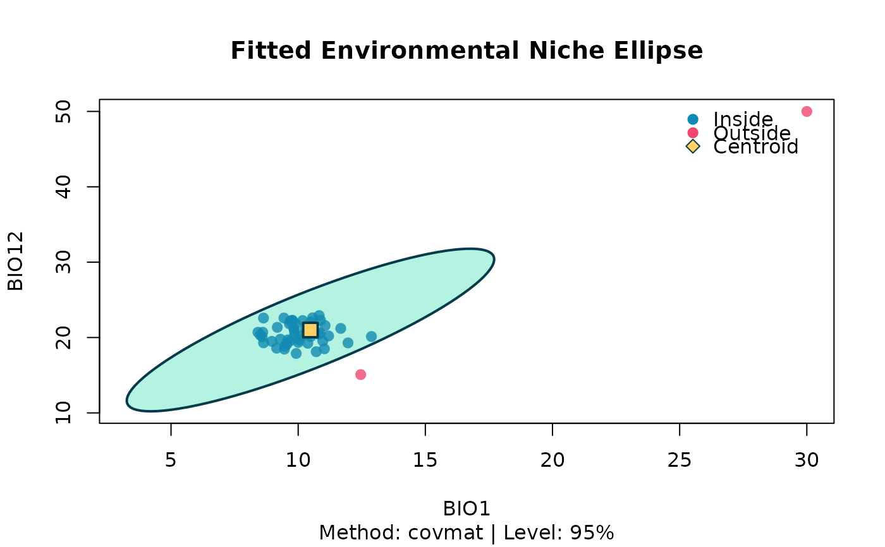

Fits an ellipsoid that encompasses a chosen proportion of the
data points in an environmental space of two or more dimensions. The
centroid and covariance matrix can be estimated either by the classical
sample moments ("covmat") or by the robust Minimum Volume Ellipsoid
("mve"; Rousseeuw, 1985). Points are classified as inside or outside
the ellipsoid using a \(\chi^2\) cutoff on their squared Mahalanobis
distance.
Arguments
- data
A
data.framecontaining the environmental variables.- env_vars
A character vector of at least two column names in
datarepresenting the environmental variables.- method
One of
"covmat"(default, classical) or"mve"(robust Minimum Volume Ellipsoid viacov.mve).- level
A single number in
(0, 1): the confidence level of the ellipsoid. Default0.95.
Value
An object of class c("bean_ellipsoid", "nicheR_ellipsoid")
(a list) with:
centroidNamed vector of variable means / centre.
covariance_matrix,cov_matrixThe covariance matrix used. Both names point to the same object; the former is kept for backward compatibility, the latter is the name expected by the nicheR package.
Sigma_invThe inverse of
cov_matrix, pre-computed so thatnicheR::predict()does not have to invert it on every call.dimensionsInteger, the number of environmental variables.
var_namesCharacter vector of the variable names used to fit the ellipsoid.
clConfidence level (same value as
parameters$level); name expected by nicheR.chi2_cutoffThe chi-square threshold,
stats::qchisq(level, df = dimensions).niche_ellipseA
data.frameof polygon vertices for the 2-D ellipse.NULLwhen more than two variables are supplied (the 3-D mesh is generated lazily on plot).all_points_usedComplete-case input data.
points_in_ellipseSubset inside the ellipsoid.
points_outside_ellipseSubset outside the ellipsoid.
inside_indicesRow indices (in
all_points_used) classified as inside.parametersList with
levelandmethod.
The object carries two S3 classes: "bean_ellipsoid" (used by
print() and plot() in this package) and
"nicheR_ellipsoid" (used by nicheR::predict() once that
package is available on CRAN). Both methods work on the same object;
the appropriate one is dispatched depending on which package is
attached.
Details
Methods. "covmat" uses the sample mean and sample covariance
matrix. It is optimal under multivariate normality but sensitive to
outliers. "mve" (Rousseeuw, 1985) finds the smallest-volume ellipsoid
that contains a fraction of the data and is robust to a moderate proportion
of contaminating points.
Confidence level. Assuming approximate multivariate normality, the
boundary of the ellipsoid is the set of points whose squared Mahalanobis
distance equals qchisq(level, df = n_dim).
References
If you intend to project a bean_ellipsoid into geographic space,
please install the nicheR package and use its predict()
method; the dual S3 class on the returned object allows
nicheR::predict() to dispatch on it directly. If you use the
prediction step in published work, please cite nicheR:
Castaneda-Guzman, M., Hughes, C., Paansri, P. & Cobos, M. E. (2026). nicheR: Ellipsoid-Based Virtual Niches and Visualization. R package version 0.1.0. https://github.com/castanedaM/nicheR.
Rousseeuw, P. J. (1985). Multivariate estimation with high breakdown point. In Mathematical Statistics and Applications, Vol. B, 283–297.
Van Aelst, S. & Rousseeuw, P. (2009). Minimum volume ellipsoid. Wiley Interdisciplinary Reviews: Computational Statistics, 1(1), 71–82.
Cobos, M. E., Osorio-Olvera, L., Soberón, J., Peterson, A. T., Barve, V. & Barve, N. (2024). ellipsenm: ecological niches' characterizations using ellipsoids. https://github.com/marlonecobos/ellipsenm.
Examples
set.seed(81)
env_data <- data.frame(
BIO1 = c(rnorm(50, 10, 1), 30),
BIO12 = c(rnorm(50, 20, 2), 50)
)
fit <- fit_ellipsoid(env_data, env_vars = c("BIO1", "BIO12"),
method = "covmat", level = 0.95)
print(fit)
#> -- Bean Environmental Niche Ellipsoid --
#> Method : covmat
#> Dimensions : 2 (BIO1, BIO12)
#> Level : 95.00%
#> Points used : 51 (inside: 49, 96.1%)
#> Centroid:
#> BIO1 BIO12
#> 10.48281 20.99832
plot(fit)
